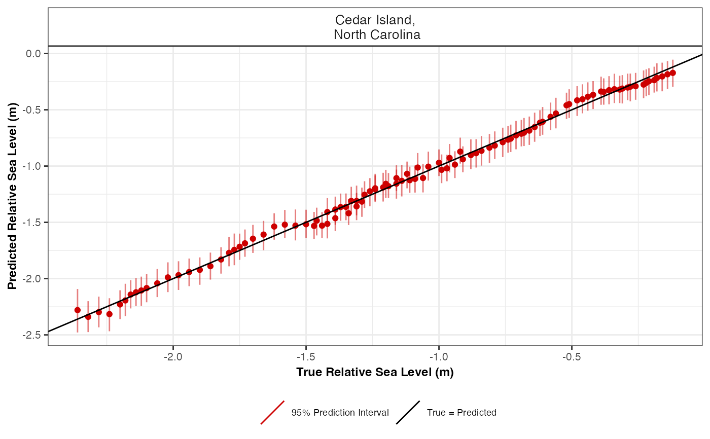

R/cross_val_check.R
cross_val_check.RdCross validation check for spline in time, spline in space time and GAM in order to select the most appropriate number of knots when creating basis functions.
cross_val_check(
raw_data,
prediction_grid_res = 30,
spline_nseg = NULL,
spline_nseg_t = 20,
spline_nseg_st = 6,
n_iterations = 5000,
n_burnin = 1000,
n_thin = 4,
n_chains = 3,
model_type,
n_fold = 5,
seed = NULL,
CI = 0.95
)Raw input data
Resolution of grid. Predictions over every 50 years(default) can vary based on user preference, as larger values will reduce computational run time.
This setting is focused on the Noisy Input Spline model. It provides the number of segments used to create basis functions.
This setting is focused on the Noisy Input Generalised Additive Model. It provides the number of segments used to create basis functions.
This setting is focused on the Noisy Input Generalised Additive Model. It provides the number of segments used to create basis functions.
Number of iterations. Increasing this value will increase the computational run time.
Size of burn-in. This number removes a certain number of samples at the beginning.
Amount of thinning.
Number of MCMC chains. The number of times the model will be run.
The user selects their statistical model type. The user can select a Noisy Input Spline in Time using "ni_spline_t". The user can select a Noisy Input Spline in Space Time using "ni_spline_st". The user can select a Noisy Input Generalised Additive Model using "ni_gam_decomp".
Number of folds required in the cross validation. The default is 5 fold cross validation.
If the user wants reproducible results, seed stores the output when random selection was used in the creation of the cross validation.
Size of the credible interval required by the user. The default is 0.95 corresponding to 95%.
A list containing the model comparison measures, e.g. Root Mean Square Error (RMSE), and plot of true vs predicted values
data <- NAACproxydata %>% dplyr::filter(Site == "Cedar Island")
cross_val_check(raw_data = data, model_type = "ni_spline_t")
#> The legacy packages maptools, rgdal, and rgeos, underpinning this package
#> will retire shortly. Please refer to R-spatial evolution reports on
#> https://r-spatial.org/r/2023/05/15/evolution4.html for details.
#> This package is now running under evolution status 0
#> module glm loaded
#> Compiling model graph
#> Resolving undeclared variables
#> Allocating nodes
#> Graph information:
#> Observed stochastic nodes: 83
#> Unobserved stochastic nodes: 15
#> Total graph size: 1442
#>
#> Initializing model
#>
#> Compiling model graph
#> Resolving undeclared variables
#> Allocating nodes
#> Graph information:
#> Observed stochastic nodes: 83
#> Unobserved stochastic nodes: 130
#> Total graph size: 6850
#>
#> Initializing model
#>
#> No convergence issues detected.
#> Compiling model graph
#> Resolving undeclared variables
#> Allocating nodes
#> Graph information:
#> Observed stochastic nodes: 83
#> Unobserved stochastic nodes: 15
#> Total graph size: 1442
#>
#> Initializing model
#>
#> Compiling model graph
#> Resolving undeclared variables
#> Allocating nodes
#> Graph information:
#> Observed stochastic nodes: 83
#> Unobserved stochastic nodes: 130
#> Total graph size: 6850
#>
#> Initializing model
#>
#> No convergence issues detected.
#> Compiling model graph
#> Resolving undeclared variables
#> Allocating nodes
#> Graph information:
#> Observed stochastic nodes: 84
#> Unobserved stochastic nodes: 15
#> Total graph size: 1459
#>
#> Initializing model
#>
#> Compiling model graph
#> Resolving undeclared variables
#> Allocating nodes
#> Graph information:
#> Observed stochastic nodes: 84
#> Unobserved stochastic nodes: 129
#> Total graph size: 6851
#>
#> Initializing model
#>
#> No convergence issues detected.
#> Compiling model graph
#> Resolving undeclared variables
#> Allocating nodes
#> Graph information:
#> Observed stochastic nodes: 83
#> Unobserved stochastic nodes: 15
#> Total graph size: 1442
#>
#> Initializing model
#>
#> Compiling model graph
#> Resolving undeclared variables
#> Allocating nodes
#> Graph information:
#> Observed stochastic nodes: 83
#> Unobserved stochastic nodes: 130
#> Total graph size: 6849
#>
#> Initializing model
#>
#> No convergence issues detected.
#> Compiling model graph
#> Resolving undeclared variables
#> Allocating nodes
#> Graph information:
#> Observed stochastic nodes: 83
#> Unobserved stochastic nodes: 15
#> Total graph size: 1442
#>
#> Initializing model
#>
#> Compiling model graph
#> Resolving undeclared variables
#> Allocating nodes
#> Graph information:
#> Observed stochastic nodes: 83
#> Unobserved stochastic nodes: 128
#> Total graph size: 6782
#>
#> Initializing model
#>
#> No convergence issues detected.
#> $ME_MAE_RSME_fold_site
#> # A tibble: 5 × 5
#> SiteName CV_fold_number RSME MAE ME
#> <fct> <fct> <dbl> <dbl> <dbl>
#> 1 "Cedar Island,\n North Carolina" 1 0.0871 0.0253 -0.0190
#> 2 "Cedar Island,\n North Carolina" 2 0.0126 0.0350 0.00274
#> 3 "Cedar Island,\n North Carolina" 3 0.00433 0.0301 0.000968
#> 4 "Cedar Island,\n North Carolina" 4 0.0485 0.0322 0.0106
#> 5 "Cedar Island,\n North Carolina" 5 0.0118 0.0358 0.00258
#>
#> $ME_MAE_RSME_site
#> # A tibble: 1 × 4
#> SiteName RSME MAE ME
#> <fct> <dbl> <dbl> <dbl>
#> 1 "Cedar Island,\n North Carolina" 0.00448 0.0317 -0.000439
#>
#> $ME_MAE_RSME_overall
#> RSME MAE ME
#> 1 0.004476072 0.03171215 -0.000438915
#>
#> $ME_MAE_RSME_fold
#> # A tibble: 5 × 4
#> CV_fold_number RSME MAE ME
#> <fct> <dbl> <dbl> <dbl>
#> 1 1 0.0871 0.0253 -0.0190
#> 2 2 0.0126 0.0350 0.00274
#> 3 3 0.00433 0.0301 0.000968
#> 4 4 0.0485 0.0322 0.0106
#> 5 5 0.0118 0.0358 0.00258
#>
#> $true_pred_plot

#>
#> $CV_model_df
#> Longitude Latitude SiteName data_type_id Age
#> 1 -76.38 34.971 Cedar Island,\n North Carolina ProxyRecord -731
#> 2 -76.38 34.971 Cedar Island,\n North Carolina ProxyRecord -211
#> 3 -76.38 34.971 Cedar Island,\n North Carolina ProxyRecord 15
#> 4 -76.38 34.971 Cedar Island,\n North Carolina ProxyRecord 229
#> 5 -76.38 34.971 Cedar Island,\n North Carolina ProxyRecord 381
#> 6 -76.38 34.971 Cedar Island,\n North Carolina ProxyRecord 434
#> 7 -76.38 34.971 Cedar Island,\n North Carolina ProxyRecord 763
#> 8 -76.38 34.971 Cedar Island,\n North Carolina ProxyRecord 789
#> 9 -76.38 34.971 Cedar Island,\n North Carolina ProxyRecord 818
#> 10 -76.38 34.971 Cedar Island,\n North Carolina ProxyRecord 860
#> 11 -76.38 34.971 Cedar Island,\n North Carolina ProxyRecord 1002
#> 12 -76.38 34.971 Cedar Island,\n North Carolina ProxyRecord 1287
#> 13 -76.38 34.971 Cedar Island,\n North Carolina ProxyRecord 1354
#> 14 -76.38 34.971 Cedar Island,\n North Carolina ProxyRecord 1669
#> 15 -76.38 34.971 Cedar Island,\n North Carolina ProxyRecord 1697
#> 16 -76.38 34.971 Cedar Island,\n North Carolina ProxyRecord 1864
#> 17 -76.38 34.971 Cedar Island,\n North Carolina ProxyRecord 1874
#> 18 -76.38 34.971 Cedar Island,\n North Carolina ProxyRecord 1918
#> 19 -76.38 34.971 Cedar Island,\n North Carolina ProxyRecord 1923
#> 20 -76.38 34.971 Cedar Island,\n North Carolina ProxyRecord 1927
#> 21 -76.38 34.971 Cedar Island,\n North Carolina ProxyRecord 1963
#> 22 -76.38 34.971 Cedar Island,\n North Carolina ProxyRecord -333
#> 23 -76.38 34.971 Cedar Island,\n North Carolina ProxyRecord 73
#> 24 -76.38 34.971 Cedar Island,\n North Carolina ProxyRecord 505
#> 25 -76.38 34.971 Cedar Island,\n North Carolina ProxyRecord 568
#> 26 -76.38 34.971 Cedar Island,\n North Carolina ProxyRecord 605
#> 27 -76.38 34.971 Cedar Island,\n North Carolina ProxyRecord 745
#> 28 -76.38 34.971 Cedar Island,\n North Carolina ProxyRecord 1121
#> 29 -76.38 34.971 Cedar Island,\n North Carolina ProxyRecord 1155
#> 30 -76.38 34.971 Cedar Island,\n North Carolina ProxyRecord 1267
#> 31 -76.38 34.971 Cedar Island,\n North Carolina ProxyRecord 1295
#> 32 -76.38 34.971 Cedar Island,\n North Carolina ProxyRecord 1322
#> 33 -76.38 34.971 Cedar Island,\n North Carolina ProxyRecord 1408
#> 34 -76.38 34.971 Cedar Island,\n North Carolina ProxyRecord 1460
#> 35 -76.38 34.971 Cedar Island,\n North Carolina ProxyRecord 1626
#> 36 -76.38 34.971 Cedar Island,\n North Carolina ProxyRecord 1644
#> 37 -76.38 34.971 Cedar Island,\n North Carolina ProxyRecord 1725
#> 38 -76.38 34.971 Cedar Island,\n North Carolina ProxyRecord 1736
#> 39 -76.38 34.971 Cedar Island,\n North Carolina ProxyRecord 1768
#> 40 -76.38 34.971 Cedar Island,\n North Carolina ProxyRecord 1846
#> 41 -76.38 34.971 Cedar Island,\n North Carolina ProxyRecord 1934
#> 42 -76.38 34.971 Cedar Island,\n North Carolina ProxyRecord 1979
#> 43 -76.38 34.971 Cedar Island,\n North Carolina ProxyRecord -661
#> 44 -76.38 34.971 Cedar Island,\n North Carolina ProxyRecord -174
#> 45 -76.38 34.971 Cedar Island,\n North Carolina ProxyRecord -50
#> 46 -76.38 34.971 Cedar Island,\n North Carolina ProxyRecord 46
#> 47 -76.38 34.971 Cedar Island,\n North Carolina ProxyRecord 312
#> 48 -76.38 34.971 Cedar Island,\n North Carolina ProxyRecord 586
#> 49 -76.38 34.971 Cedar Island,\n North Carolina ProxyRecord 623
#> 50 -76.38 34.971 Cedar Island,\n North Carolina ProxyRecord 672
#> 51 -76.38 34.971 Cedar Island,\n North Carolina ProxyRecord 725
#> 52 -76.38 34.971 Cedar Island,\n North Carolina ProxyRecord 1038
#> 53 -76.38 34.971 Cedar Island,\n North Carolina ProxyRecord 1159
#> 54 -76.38 34.971 Cedar Island,\n North Carolina ProxyRecord 1389
#> 55 -76.38 34.971 Cedar Island,\n North Carolina ProxyRecord 1436
#> 56 -76.38 34.971 Cedar Island,\n North Carolina ProxyRecord 1525
#> 57 -76.38 34.971 Cedar Island,\n North Carolina ProxyRecord 1570
#> 58 -76.38 34.971 Cedar Island,\n North Carolina ProxyRecord 1603
#> 59 -76.38 34.971 Cedar Island,\n North Carolina ProxyRecord 1840
#> 60 -76.38 34.971 Cedar Island,\n North Carolina ProxyRecord 1885
#> 61 -76.38 34.971 Cedar Island,\n North Carolina ProxyRecord 1941
#> 62 -76.38 34.971 Cedar Island,\n North Carolina ProxyRecord 2005
#> 63 -76.38 34.971 Cedar Island,\n North Carolina ProxyRecord -525
#> 64 -76.38 34.971 Cedar Island,\n North Carolina ProxyRecord -143
#> 65 -76.38 34.971 Cedar Island,\n North Carolina ProxyRecord -112
#> 66 -76.38 34.971 Cedar Island,\n North Carolina ProxyRecord 100
#> 67 -76.38 34.971 Cedar Island,\n North Carolina ProxyRecord 278
#> 68 -76.38 34.971 Cedar Island,\n North Carolina ProxyRecord 572
#> 69 -76.38 34.971 Cedar Island,\n North Carolina ProxyRecord 604
#> 70 -76.38 34.971 Cedar Island,\n North Carolina ProxyRecord 825
#> 71 -76.38 34.971 Cedar Island,\n North Carolina ProxyRecord 883
#> 72 -76.38 34.971 Cedar Island,\n North Carolina ProxyRecord 941
#> 73 -76.38 34.971 Cedar Island,\n North Carolina ProxyRecord 1057
#> 74 -76.38 34.971 Cedar Island,\n North Carolina ProxyRecord 1178
#> 75 -76.38 34.971 Cedar Island,\n North Carolina ProxyRecord 1219
#> 76 -76.38 34.971 Cedar Island,\n North Carolina ProxyRecord 1490
#> 77 -76.38 34.971 Cedar Island,\n North Carolina ProxyRecord 1590
#> 78 -76.38 34.971 Cedar Island,\n North Carolina ProxyRecord 1790
#> 79 -76.38 34.971 Cedar Island,\n North Carolina ProxyRecord 1898
#> 80 -76.38 34.971 Cedar Island,\n North Carolina ProxyRecord 1930
#> 81 -76.38 34.971 Cedar Island,\n North Carolina ProxyRecord 1951
#> 82 -76.38 34.971 Cedar Island,\n North Carolina ProxyRecord 1988
#> 83 -76.38 34.971 Cedar Island,\n North Carolina ProxyRecord 1996
#> 84 -76.38 34.971 Cedar Island,\n North Carolina ProxyRecord -800
#> 85 -76.38 34.971 Cedar Island,\n North Carolina ProxyRecord -270
#> 86 -76.38 34.971 Cedar Island,\n North Carolina ProxyRecord 153
#> 87 -76.38 34.971 Cedar Island,\n North Carolina ProxyRecord 346
#> 88 -76.38 34.971 Cedar Island,\n North Carolina ProxyRecord 625
#> 89 -76.38 34.971 Cedar Island,\n North Carolina ProxyRecord 659
#> 90 -76.38 34.971 Cedar Island,\n North Carolina ProxyRecord 895
#> 91 -76.38 34.971 Cedar Island,\n North Carolina ProxyRecord 983
#> 92 -76.38 34.971 Cedar Island,\n North Carolina ProxyRecord 1068
#> 93 -76.38 34.971 Cedar Island,\n North Carolina ProxyRecord 1082
#> 94 -76.38 34.971 Cedar Island,\n North Carolina ProxyRecord 1093
#> 95 -76.38 34.971 Cedar Island,\n North Carolina ProxyRecord 1146
#> 96 -76.38 34.971 Cedar Island,\n North Carolina ProxyRecord 1340
#> 97 -76.38 34.971 Cedar Island,\n North Carolina ProxyRecord 1468
#> 98 -76.38 34.971 Cedar Island,\n North Carolina ProxyRecord 1543
#> 99 -76.38 34.971 Cedar Island,\n North Carolina ProxyRecord 1653
#> 100 -76.38 34.971 Cedar Island,\n North Carolina ProxyRecord 1910
#> 101 -76.38 34.971 Cedar Island,\n North Carolina ProxyRecord 1913
#> 102 -76.38 34.971 Cedar Island,\n North Carolina ProxyRecord 1937
#> 103 -76.38 34.971 Cedar Island,\n North Carolina ProxyRecord 1957
#> 104 -76.38 34.971 Cedar Island,\n North Carolina ProxyRecord 1974
#> true_RSL Age_err RSL_err CV_fold test_set NI_var_grid_term pred_RSL
#> 1 -2.32 36.25 0.06 1 test_set 0.0001045675 -2.3164290
#> 2 -2.16 40.25 0.06 1 test_set 0.0013672438 -2.1425090
#> 3 -2.02 27.50 0.06 1 test_set 0.0016500688 -1.9871387
#> 4 -1.82 74.50 0.06 1 test_set 0.0017766663 -1.8207094
#> 5 -1.73 78.50 0.06 1 test_set 0.0018164607 -1.6980888
#> 6 -1.70 75.25 0.06 1 test_set 0.0018222025 -1.6550018
#> 7 -1.39 43.75 0.06 1 test_set 0.0017637581 -1.3909072
#> 8 -1.37 44.75 0.06 1 test_set 0.0017522295 -1.3706881
#> 9 -1.35 45.00 0.06 1 test_set 0.0017381766 -1.3483142
#> 10 -1.33 44.75 0.06 1 test_set 0.0017155917 -1.3162750
#> 11 -1.24 50.50 0.06 1 test_set 0.0016196730 -1.2117416
#> 12 -1.08 19.75 0.06 1 test_set 0.0015752538 -1.0178620
#> 13 -1.00 20.25 0.06 1 test_set 0.0016614337 -0.9702381
#> 14 -0.66 30.50 0.06 1 test_set 0.0025877674 -0.6831368
#> 15 -0.64 26.25 0.06 1 test_set 0.0027117039 -0.6499699
#> 16 -0.48 14.00 0.06 1 test_set 0.0035919382 -0.4152462
#> 17 -0.46 12.75 0.06 1 test_set 0.0036523129 -0.3989451
#> 18 -0.36 7.00 0.06 1 test_set 0.0039282520 -0.3238582
#> 19 -0.34 7.50 0.06 1 test_set 0.0039606699 -0.3149694
#> 20 -0.32 8.00 0.06 1 test_set 0.0039867601 -0.3078048
#> 21 -0.21 5.50 0.06 1 test_set 0.0042278085 -0.2411361
#> 22 -2.20 35.00 0.06 2 test_set 0.0011470820 -2.2187363
#> 23 -1.94 35.50 0.06 2 test_set 0.0017130003 -1.9483619
#> 24 -1.66 64.75 0.06 2 test_set 0.0018156149 -1.6012989
#> 25 -1.62 32.25 0.06 2 test_set 0.0018092056 -1.5503114
#> 26 -1.44 62.25 0.06 2 test_set 0.0018029820 -1.5205180
#> 27 -1.34 60.75 0.06 2 test_set 0.0017629615 -1.4093914
#> 28 -1.14 38.75 0.06 2 test_set 0.0015391193 -1.1340447
#> 29 -1.16 43.75 0.06 2 test_set 0.0015308848 -1.1112234
#> 30 -0.99 44.25 0.06 2 test_set 0.0015721483 -1.0356773
#> 31 -0.97 42.00 0.06 2 test_set 0.0015988589 -1.0162605
#> 32 -1.04 17.75 0.06 2 test_set 0.0016308262 -0.9971758
#> 33 -0.96 85.75 0.06 2 test_set 0.0017732918 -0.9331357
#> 34 -0.86 27.25 0.06 2 test_set 0.0018894461 -0.8912462
#> 35 -0.71 26.00 0.06 2 test_set 0.0024115956 -0.7344280
#> 36 -0.69 29.00 0.06 2 test_set 0.0024820660 -0.7148041
#> 37 -0.62 24.75 0.06 2 test_set 0.0028327209 -0.6187787
#> 38 -0.61 23.75 0.06 2 test_set 0.0028845732 -0.6046922
#> 39 -0.58 19.50 0.06 2 test_set 0.0030411711 -0.5621805
#> 40 -0.51 14.75 0.06 2 test_set 0.0034587628 -0.4483292
#> 41 -0.29 8.00 0.06 2 test_set 0.0039909870 -0.3005938
#> 42 -0.18 5.75 0.06 2 test_set 0.0042881783 -0.2163276
#> 43 -2.28 47.75 0.06 3 test_set 0.0003116133 -2.3236897
#> 44 -2.14 46.00 0.06 3 test_set 0.0012844819 -2.1207401
#> 45 -2.06 41.00 0.06 3 test_set 0.0014229650 -2.0350756
#> 46 -1.98 33.00 0.06 3 test_set 0.0014997290 -1.9634735
#> 47 -1.77 79.75 0.06 3 test_set 0.0015994956 -1.7531157
#> 48 -1.58 26.25 0.06 3 test_set 0.0016010936 -1.5316730
#> 49 -1.50 15.25 0.06 3 test_set 0.0015939148 -1.5021052
#> 50 -1.46 36.75 0.06 3 test_set 0.0015816998 -1.4632296
#> 51 -1.42 41.25 0.06 3 test_set 0.0015650136 -1.4216206
#> 52 -1.24 61.00 0.06 3 test_set 0.0013928542 -1.1902056
#> 53 -1.09 36.50 0.06 3 test_set 0.0013331472 -1.1093277
#> 54 -0.91 31.00 0.06 3 test_set 0.0015251075 -0.9509222
#> 55 -0.88 30.50 0.06 3 test_set 0.0016145253 -0.9143596
#> 56 -0.81 26.00 0.06 3 test_set 0.0018305121 -0.8382820
#> 57 -0.76 24.25 0.06 3 test_set 0.0019629659 -0.7956818
#> 58 -0.73 23.50 0.06 3 test_set 0.0020700221 -0.7623913
#> 59 -0.52 14.00 0.06 3 test_set 0.0030855757 -0.4589371
#> 60 -0.44 10.25 0.06 3 test_set 0.0033273252 -0.3858977
#> 61 -0.26 7.75 0.06 3 test_set 0.0036499741 -0.2868602
#> 62 -0.12 2.25 0.06 3 test_set 0.0040474085 -0.1617759
#> 63 -2.24 65.00 0.06 4 test_set 0.0006950245 -2.2961958
#> 64 -2.12 44.00 0.06 4 test_set 0.0014732861 -2.1073609
#> 65 -2.10 42.50 0.06 4 test_set 0.0015153500 -2.0864829
#> 66 -1.90 37.25 0.06 4 test_set 0.0017181378 -1.9304471
#> 67 -1.79 78.50 0.06 4 test_set 0.0017934430 -1.7893011
#> 68 -1.47 61.00 0.06 4 test_set 0.0018190087 -1.5502742
#> 69 -1.54 18.50 0.06 4 test_set 0.0018145073 -1.5243636
#> 70 -1.31 65.50 0.06 4 test_set 0.0017443784 -1.3491761
#> 71 -1.29 65.75 0.06 4 test_set 0.0017146746 -1.3048117
#> 72 -1.28 51.50 0.06 4 test_set 0.0016802729 -1.2613542
#> 73 -1.21 56.75 0.06 4 test_set 0.0015973763 -1.1776482
#> 74 -1.06 36.00 0.06 4 test_set 0.0015463544 -1.0948502
#> 75 -1.12 39.50 0.06 4 test_set 0.0015557437 -1.0670563
#> 76 -0.84 25.50 0.06 4 test_set 0.0019608774 -0.8636034
#> 77 -0.74 23.25 0.06 4 test_set 0.0022609076 -0.7702297
#> 78 -0.56 16.50 0.06 4 test_set 0.0031044199 -0.5322903
#> 79 -0.42 6.75 0.06 4 test_set 0.0036948862 -0.3668662
#> 80 -0.31 8.25 0.06 4 test_set 0.0038880169 -0.3119168
#> 81 -0.23 7.75 0.06 4 test_set 0.0040192750 -0.2742688
#> 82 -0.16 5.00 0.06 4 test_set 0.0042592467 -0.2047541
#> 83 -0.14 2.00 0.06 4 test_set 0.0043125932 -0.1891750
#> 84 -2.36 65.25 0.06 5 test_set 0.0004512731 -2.2680343
#> 85 -2.18 26.25 0.06 5 test_set 0.0011829040 -2.1847888
#> 86 -1.86 55.50 0.06 5 test_set 0.0017566981 -1.8933847
#> 87 -1.75 79.50 0.06 5 test_set 0.0018281841 -1.7372482
#> 88 -1.42 62.25 0.06 5 test_set 0.0018313781 -1.5083955
#> 89 -1.39 60.25 0.06 5 test_set 0.0018237753 -1.4808188
#> 90 -1.31 49.00 0.06 5 test_set 0.0017231497 -1.2949467
#> 91 -1.26 62.25 0.06 5 test_set 0.0016642160 -1.2291906
#> 92 -1.19 53.75 0.06 5 test_set 0.0015962481 -1.1681398
#> 93 -1.20 40.25 0.06 5 test_set 0.0015840125 -1.1583438
#> 94 -1.16 45.50 0.06 5 test_set 0.0015741923 -1.1507015
#> 95 -1.11 36.50 0.06 5 test_set 0.0015392595 -1.1144633
#> 96 -0.94 39.75 0.06 5 test_set 0.0016300937 -0.9815858
#> 97 -0.92 120.50 0.06 5 test_set 0.0018781388 -0.8830322
#> 98 -0.79 25.25 0.06 5 test_set 0.0020929658 -0.8170887
#> 99 -0.68 29.50 0.06 5 test_set 0.0025009244 -0.7050125
#> 100 -0.39 5.25 0.06 5 test_set 0.0038845437 -0.3431619
#> 101 -0.38 5.75 0.06 5 test_set 0.0039042549 -0.3379115
#> 102 -0.28 8.00 0.06 5 test_set 0.0040649018 -0.2949285
#> 103 -0.22 7.00 0.06 5 test_set 0.0042027907 -0.2577500
#> 104 -0.19 5.50 0.06 5 test_set 0.0043228671 -0.2251501
#> upr lwr y_post_pred upr_PI lwr_PI CI CV_fold_number
#> 1 -2.3910114 -2.2454445 -2.3165513 -2.4567309 -2.17092622 95% 1
#> 2 -2.1844903 -2.0999678 -2.1427329 -2.2708049 -2.01310436 95% 1
#> 3 -2.0202510 -1.9538376 -1.9867482 -2.1103608 -1.86839122 95% 1
#> 4 -1.8561426 -1.7873442 -1.8205263 -1.9428798 -1.69355918 95% 1
#> 5 -1.7303443 -1.6671297 -1.6975596 -1.8226541 -1.57197797 95% 1
#> 6 -1.6853028 -1.6256157 -1.6551254 -1.7770588 -1.53310569 95% 1
#> 7 -1.4146379 -1.3674369 -1.3919591 -1.5134080 -1.27221528 95% 1
#> 8 -1.3947980 -1.3467583 -1.3687911 -1.4883867 -1.24480681 95% 1
#> 9 -1.3729389 -1.3239580 -1.3478725 -1.4708760 -1.22514362 95% 1
#> 10 -1.3421152 -1.2913338 -1.3176299 -1.4411922 -1.19886412 95% 1
#> 11 -1.2390826 -1.1848306 -1.2115527 -1.3349011 -1.08810220 95% 1
#> 12 -1.0391190 -0.9962232 -1.0165565 -1.1328813 -0.89563294 95% 1
#> 13 -0.9917800 -0.9485244 -0.9710977 -1.0918255 -0.85018205 95% 1
#> 14 -0.7106512 -0.6553884 -0.6825838 -0.8051192 -0.56151869 95% 1
#> 15 -0.6769238 -0.6225044 -0.6518207 -0.7780796 -0.52771840 95% 1
#> 16 -0.4382072 -0.3918709 -0.4162045 -0.5374129 -0.29240761 95% 1
#> 17 -0.4218481 -0.3752072 -0.3993894 -0.5204521 -0.27859512 95% 1
#> 18 -0.3492511 -0.2966926 -0.3249339 -0.4461782 -0.19959703 95% 1
#> 19 -0.3407632 -0.2870621 -0.3151824 -0.4354483 -0.19473795 95% 1
#> 20 -0.3338543 -0.2796052 -0.3063614 -0.4305601 -0.18448004 95% 1
#> 21 -0.2727119 -0.2082707 -0.2422613 -0.3638922 -0.11834049 95% 1
#> 22 -2.2708138 -2.1678249 -2.2202039 -2.3567696 -2.08770460 95% 2
#> 23 -1.9805704 -1.9158543 -1.9475846 -2.0705794 -1.82214668 95% 2
#> 24 -1.6294153 -1.5735849 -1.6000774 -1.7194503 -1.47553148 95% 2
#> 25 -1.5763381 -1.5248149 -1.5506662 -1.6751390 -1.43118134 95% 2
#> 26 -1.5453996 -1.4958280 -1.5199207 -1.6432231 -1.39526165 95% 2
#> 27 -1.4330349 -1.3863627 -1.4123819 -1.5341118 -1.28826730 95% 2
#> 28 -1.1596906 -1.1079712 -1.1341957 -1.2597359 -1.00984115 95% 2
#> 29 -1.1362392 -1.0854965 -1.1103561 -1.2275517 -0.98990548 95% 2
#> 30 -1.0592929 -1.0112478 -1.0334349 -1.1463157 -0.91057599 95% 2
#> 31 -1.0393008 -0.9915168 -1.0147636 -1.1322189 -0.89495543 95% 2
#> 32 -1.0206371 -0.9720972 -0.9962043 -1.1178056 -0.87181021 95% 2
#> 33 -0.9586589 -0.9063740 -0.9337502 -1.0540314 -0.81706344 95% 2
#> 34 -0.9186220 -0.8625416 -0.8910245 -1.0124813 -0.76311266 95% 2
#> 35 -0.7644996 -0.7025398 -0.7340475 -0.8561262 -0.60970249 95% 2
#> 36 -0.7447072 -0.6830127 -0.7134185 -0.8355820 -0.59462987 95% 2
#> 37 -0.6470095 -0.5894413 -0.6175359 -0.7407391 -0.49612255 95% 2
#> 38 -0.6326400 -0.5759439 -0.6050098 -0.7288762 -0.47953259 95% 2
#> 39 -0.5889550 -0.5351695 -0.5605369 -0.6787345 -0.43939684 95% 2
#> 40 -0.4729771 -0.4250623 -0.4468098 -0.5696590 -0.32407097 95% 2
#> 41 -0.3270901 -0.2738953 -0.2997802 -0.4220534 -0.17570795 95% 2
#> 42 -0.2496086 -0.1830401 -0.2166035 -0.3388861 -0.09579937 95% 2
#> 43 -2.3831183 -2.2664081 -2.3231315 -2.4532543 -2.18869885 95% 3
#> 44 -2.1635069 -2.0781793 -2.1201033 -2.2465379 -1.99451133 95% 3
#> 45 -2.0710709 -1.9992783 -2.0350363 -2.1626805 -1.90986344 95% 3
#> 46 -1.9982531 -1.9301325 -1.9626138 -2.0926859 -1.84060655 95% 3
#> 47 -1.7894556 -1.7201499 -1.7528065 -1.8769060 -1.63137586 95% 3
#> 48 -1.5579134 -1.5064434 -1.5313942 -1.6551956 -1.41015651 95% 3
#> 49 -1.5270266 -1.4771814 -1.5021663 -1.6266336 -1.38063874 95% 3
#> 50 -1.4876747 -1.4390648 -1.4632042 -1.5856404 -1.34242809 95% 3
#> 51 -1.4459500 -1.3976606 -1.4208914 -1.5368829 -1.29647497 95% 3
#> 52 -1.2149909 -1.1648467 -1.1899198 -1.3126314 -1.07011730 95% 3
#> 53 -1.1330290 -1.0859167 -1.1093565 -1.2302301 -0.98982299 95% 3
#> 54 -0.9753523 -0.9266485 -0.9510271 -1.0762794 -0.83001757 95% 3
#> 55 -0.9399190 -0.8890629 -0.9150762 -1.0378294 -0.79607142 95% 3
#> 56 -0.8661047 -0.8103367 -0.8371552 -0.9587437 -0.71561720 95% 3
#> 57 -0.8241082 -0.7668213 -0.7962473 -0.9186536 -0.67373181 95% 3
#> 58 -0.7908141 -0.7336178 -0.7631965 -0.8862939 -0.64632542 95% 3
#> 59 -0.4821084 -0.4362583 -0.4594102 -0.5823516 -0.33565197 95% 3
#> 60 -0.4083745 -0.3636086 -0.3837049 -0.5040841 -0.26109845 95% 3
#> 61 -0.3129476 -0.2593565 -0.2869550 -0.4068011 -0.16266776 95% 3
#> 62 -0.2009806 -0.1210569 -0.1618993 -0.2822729 -0.03576808 95% 3
#> 63 -2.3517246 -2.2391694 -2.2967195 -2.4229491 -2.16008628 95% 4
#> 64 -2.1470794 -2.0672370 -2.1082170 -2.2420390 -1.97913472 95% 4
#> 65 -2.1243912 -2.0481827 -2.0860495 -2.2123231 -1.95734674 95% 4
#> 66 -1.9634104 -1.8953456 -1.9305592 -2.0550187 -1.80750741 95% 4
#> 67 -1.8235760 -1.7550218 -1.7889620 -1.9167758 -1.66475640 95% 4
#> 68 -1.5755407 -1.5239941 -1.5513849 -1.6723403 -1.43220800 95% 4
#> 69 -1.5490043 -1.4991553 -1.5252115 -1.6461852 -1.40663971 95% 4
#> 70 -1.3738046 -1.3241955 -1.3494953 -1.4693995 -1.22889678 95% 4
#> 71 -1.3304347 -1.2789651 -1.3046685 -1.4211907 -1.17746275 95% 4
#> 72 -1.2881340 -1.2349516 -1.2623114 -1.3770272 -1.14140746 95% 4
#> 73 -1.2043151 -1.1508414 -1.1794055 -1.3049029 -1.05604452 95% 4
#> 74 -1.1193381 -1.0702454 -1.0957754 -1.2179995 -0.97826438 95% 4
#> 75 -1.0907522 -1.0433667 -1.0665731 -1.1880194 -0.95135508 95% 4
#> 76 -0.8894132 -0.8381068 -0.8646954 -0.9850913 -0.74813341 95% 4
#> 77 -0.7975245 -0.7428224 -0.7716662 -0.8957152 -0.65083575 95% 4
#> 78 -0.5559949 -0.5082985 -0.5320671 -0.6564421 -0.40877901 95% 4
#> 79 -0.3912500 -0.3425125 -0.3653299 -0.4927067 -0.24329963 95% 4
#> 80 -0.3397812 -0.2841241 -0.3109344 -0.4332959 -0.18481685 95% 4
#> 81 -0.3053635 -0.2429018 -0.2734859 -0.3972176 -0.15281241 95% 4
#> 82 -0.2436395 -0.1663752 -0.2041872 -0.3218718 -0.08409871 95% 4
#> 83 -0.2301755 -0.1486189 -0.1896973 -0.3186185 -0.06305128 95% 4
#> 84 -2.3935870 -2.1427100 -2.2688554 -2.4410617 -2.09617197 95% 5
#> 85 -2.2308268 -2.1350443 -2.1848581 -2.3117857 -2.05363772 95% 5
#> 86 -1.9260218 -1.8613727 -1.8948404 -2.0173896 -1.76793353 95% 5
#> 87 -1.7719584 -1.7044896 -1.7365045 -1.8572756 -1.61405277 95% 5
#> 88 -1.5336689 -1.4829110 -1.5111274 -1.6298137 -1.39114558 95% 5
#> 89 -1.5052816 -1.4561185 -1.4802588 -1.6042330 -1.36227232 95% 5
#> 90 -1.3211574 -1.2683442 -1.2925602 -1.4167790 -1.16153202 95% 5
#> 91 -1.2575035 -1.2006762 -1.2296165 -1.3508562 -1.10675974 95% 5
#> 92 -1.1967030 -1.1393123 -1.1687423 -1.2932839 -1.04254580 95% 5
#> 93 -1.1872122 -1.1294864 -1.1561277 -1.2778939 -1.03477776 95% 5
#> 94 -1.1795667 -1.1217242 -1.1521888 -1.2739297 -1.02608264 95% 5
#> 95 -1.1419536 -1.0865872 -1.1160592 -1.2389471 -0.99354266 95% 5
#> 96 -1.0053325 -0.9569656 -0.9810325 -1.1016810 -0.85654111 95% 5
#> 97 -0.9087689 -0.8575958 -0.8823229 -1.0020206 -0.75846586 95% 5
#> 98 -0.8446890 -0.7897257 -0.8170894 -0.9417493 -0.69471287 95% 5
#> 99 -0.7333374 -0.6770450 -0.7057133 -0.8270090 -0.58217339 95% 5
#> 100 -0.3677541 -0.3172715 -0.3428726 -0.4643123 -0.22531226 95% 5
#> 101 -0.3626218 -0.3115696 -0.3372634 -0.4562262 -0.21563349 95% 5
#> 102 -0.3222865 -0.2667860 -0.2939532 -0.4171633 -0.16976243 95% 5
#> 103 -0.2880260 -0.2265964 -0.2585210 -0.3789713 -0.13381790 95% 5
#> 104 -0.2577841 -0.1904888 -0.2248993 -0.3484668 -0.10525150 95% 5
#> obs_in_PI
#> 1 TRUE
#> 2 TRUE
#> 3 TRUE
#> 4 TRUE
#> 5 TRUE
#> 6 TRUE
#> 7 TRUE
#> 8 TRUE
#> 9 TRUE
#> 10 TRUE
#> 11 TRUE
#> 12 TRUE
#> 13 TRUE
#> 14 TRUE
#> 15 TRUE
#> 16 TRUE
#> 17 TRUE
#> 18 TRUE
#> 19 TRUE
#> 20 TRUE
#> 21 TRUE
#> 22 TRUE
#> 23 TRUE
#> 24 TRUE
#> 25 TRUE
#> 26 TRUE
#> 27 TRUE
#> 28 TRUE
#> 29 TRUE
#> 30 TRUE
#> 31 TRUE
#> 32 TRUE
#> 33 TRUE
#> 34 TRUE
#> 35 TRUE
#> 36 TRUE
#> 37 TRUE
#> 38 TRUE
#> 39 TRUE
#> 40 TRUE
#> 41 TRUE
#> 42 TRUE
#> 43 TRUE
#> 44 TRUE
#> 45 TRUE
#> 46 TRUE
#> 47 TRUE
#> 48 TRUE
#> 49 TRUE
#> 50 TRUE
#> 51 TRUE
#> 52 TRUE
#> 53 TRUE
#> 54 TRUE
#> 55 TRUE
#> 56 TRUE
#> 57 TRUE
#> 58 TRUE
#> 59 TRUE
#> 60 TRUE
#> 61 TRUE
#> 62 TRUE
#> 63 TRUE
#> 64 TRUE
#> 65 TRUE
#> 66 TRUE
#> 67 TRUE
#> 68 TRUE
#> 69 TRUE
#> 70 TRUE
#> 71 TRUE
#> 72 TRUE
#> 73 TRUE
#> 74 TRUE
#> 75 TRUE
#> 76 TRUE
#> 77 TRUE
#> 78 TRUE
#> 79 TRUE
#> 80 TRUE
#> 81 TRUE
#> 82 TRUE
#> 83 TRUE
#> 84 TRUE
#> 85 TRUE
#> 86 TRUE
#> 87 TRUE
#> 88 TRUE
#> 89 TRUE
#> 90 TRUE
#> 91 TRUE
#> 92 TRUE
#> 93 TRUE
#> 94 TRUE
#> 95 TRUE
#> 96 TRUE
#> 97 TRUE
#> 98 TRUE
#> 99 TRUE
#> 100 TRUE
#> 101 TRUE
#> 102 TRUE
#> 103 TRUE
#> 104 TRUE
#>
#> $total_coverage
#> [1] 1
#>
#> $prediction_interval_size
#> # A tibble: 1 × 2
#> SiteName PI_width
#> <fct> <dbl>
#> 1 "Cedar Island,\n North Carolina" -0.247
#>
#> $coverage_by_site
#> # A tibble: 1 × 2
#> SiteName coverage_by_site
#> <fct> <dbl>
#> 1 "Cedar Island,\n North Carolina" 1
#>